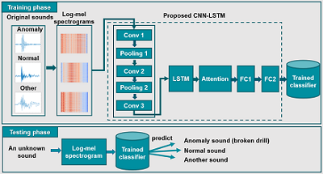
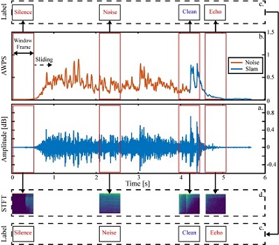
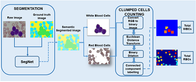
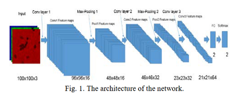

New
Machine failure detection system based on sound
Monitoring the conditions of machines is vital in the manufacturing industry.
Early detection of faulty components in machines for stopping and repairing the failed components can minimize the downtime of the machine.
1. A deep learning approach for detecting drill bit failures from a small sound dataset
2. Drill Fault Diagnosis Based on the Scalogram and Mel Spectrogram of Sound Signals Using Artificial Intelligence
Published
May, 2022
36 comments
by Admin Nat

New
Denoise audio using deep learning
Separate Sound into STFT Frames to Eliminate Sound Noise Frames in Sound Classification is a paper about denoising sound.
Sounds always contain acoustic noise and background noise that affects the accuracy of the sound classification system.
Hence, suppression of noise in the sound can improve the robustness of the sound classification model.
Creative . Design . Business
June 16, 2020
48 comments
by Admin Sam

Blood cell segmentation and counting using deep learning
In this research, deep learning semantic segmentation - cutting-edge technology is applied for segmentation red blood cells and white blood cells in blood smear images.
Music . Audio
June 11, 2020
24 comments
by John Walker

Leukemia detection using deep learning
Acute myeloid leukemia is a type of malignant
blood cell cancer that can affect both children and adults. There
are 60,140 people were expected to be diagnosed with Leukemia
in 2016, according to the Leukemia and Lymphoma Society. In
order to get the most effective treatment, the patient needs early
diagnosis. Therefore we need to have a support system of early
diagnosis to guide treatment for patients with acute leukemia as
soon as possible.
Artworks . Design
June 4, 2020
72 comments
by Admin Sam